brand communication
The context
At Estúdio Tipo-Grafia we were free to choose which clients we worked with, so I leaned towards the ones that gave us the most creative freedom. These two were my favourites.
The ice cream shop
Gelados Lis let me work across several media to come up with these images, and coordinate with account managers, photographers and copywriters to define their Instagram feed.
The racing driver
Filipe Albuquerque was a one-off chance to design posters that were printed as physical merchandise, which I hadn’t done until then.
Gelados Lis
Art direction and photo editing for this ice cream shop’s Instagram feed, bringing their fun, playful and innovative identity into their online presence.
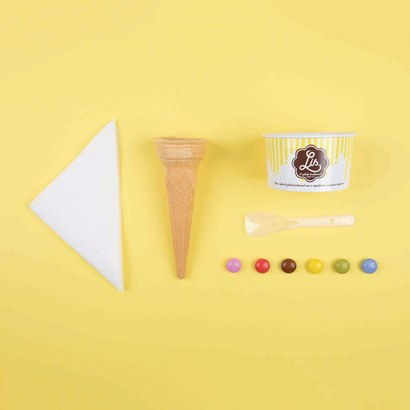
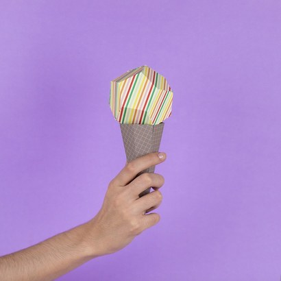
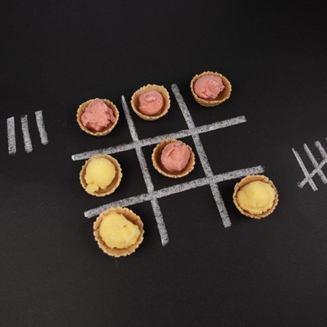
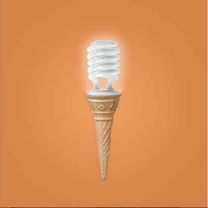
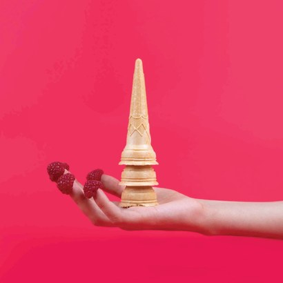
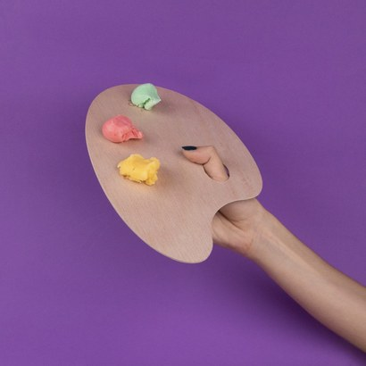
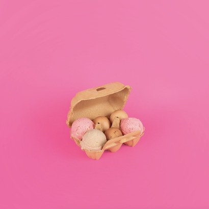
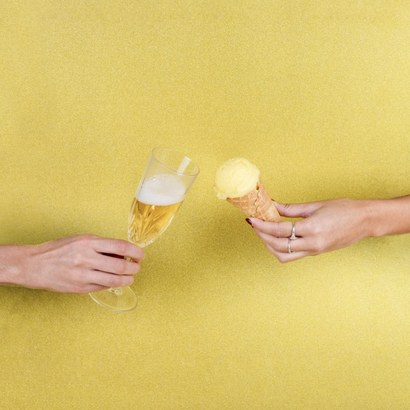
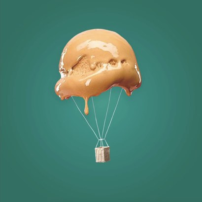
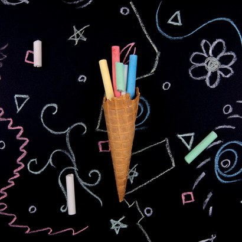
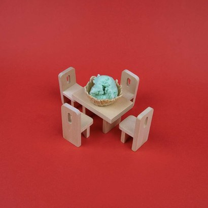
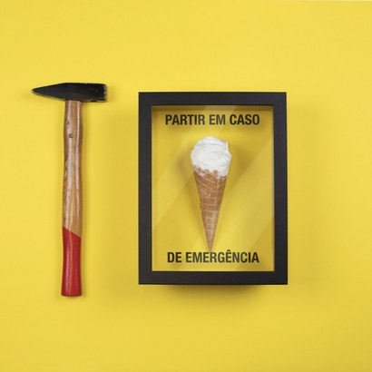
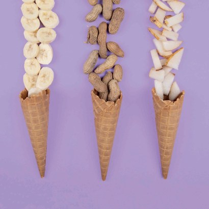
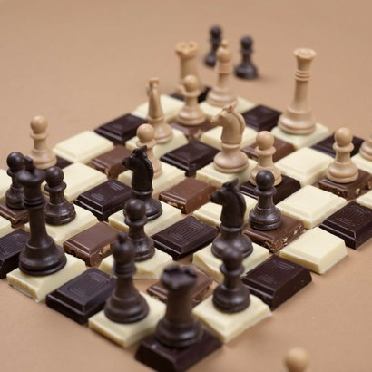

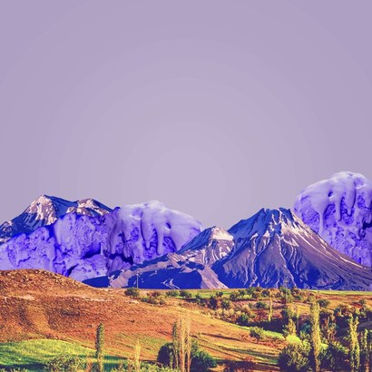
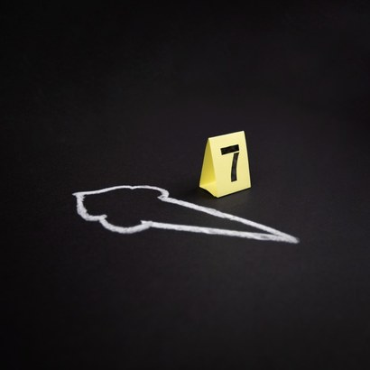
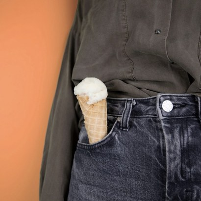
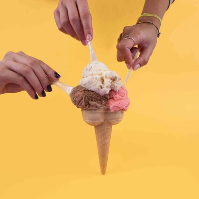
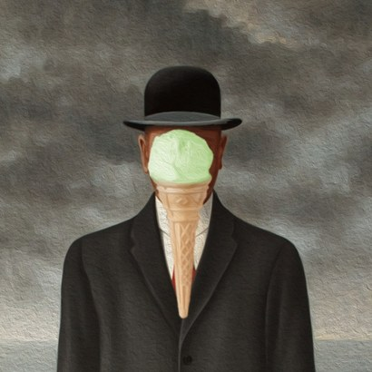
Filipe Albuquerque
For this LMP2 driver, alongside rebranding his social media presence, the studio decided to commemorate each race he took part in with a custom poster, of which I designed a few.
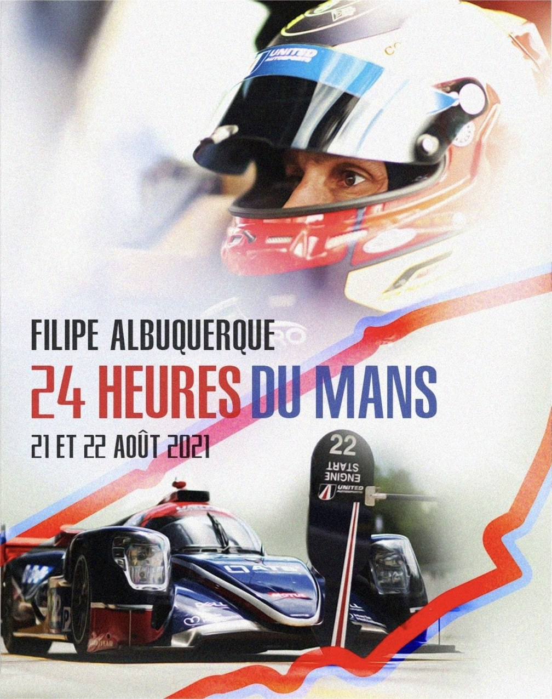
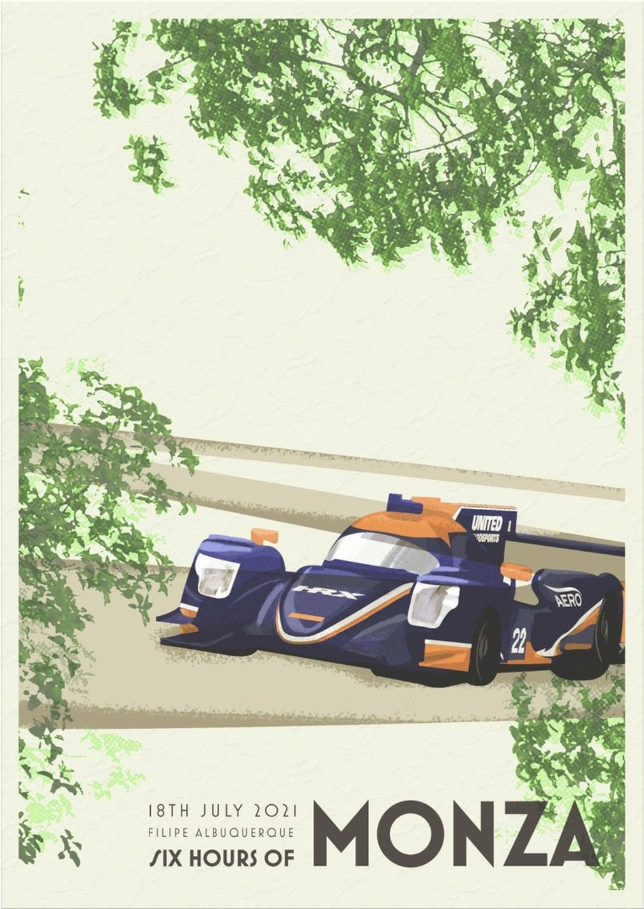
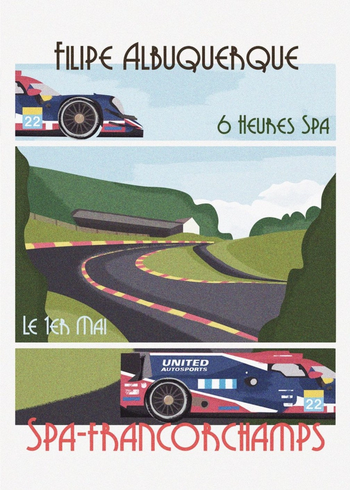
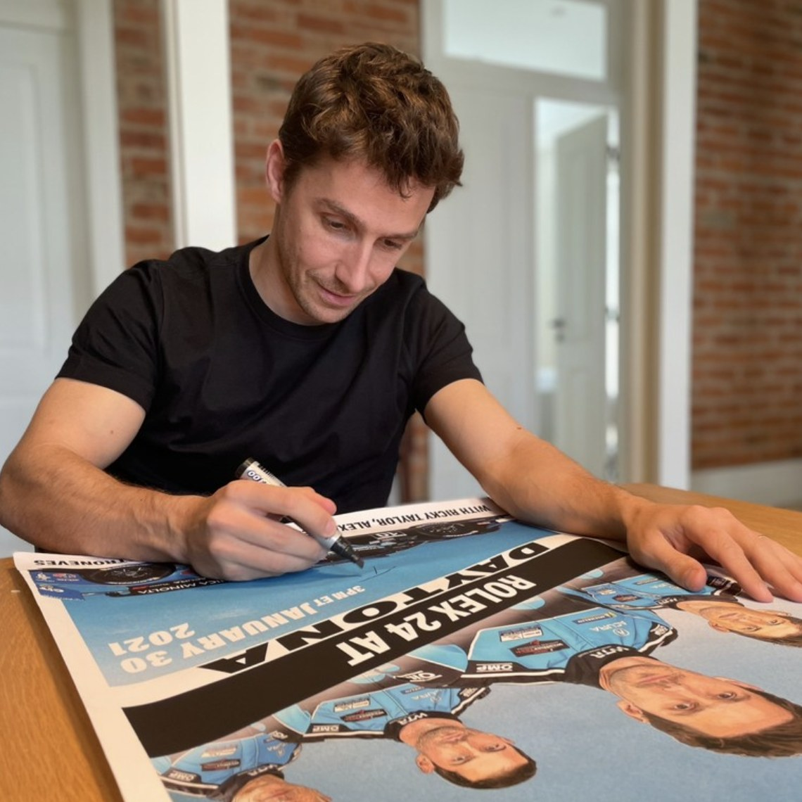